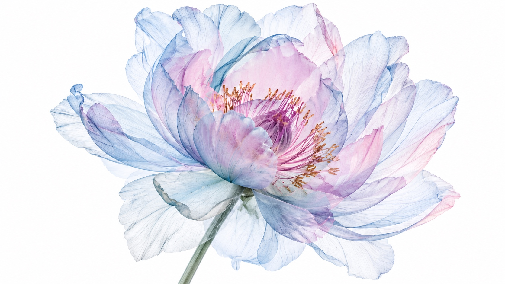

Specimen 001 / Est. 2026
Kijuki
The Little Ideas Lab
Small experiments for a more human tomorrow.
Current experiment Golden
Specimen 001 / Est. 2026
The Little Ideas Lab
Small experiments for a more human tomorrow.
Current experiment Golden